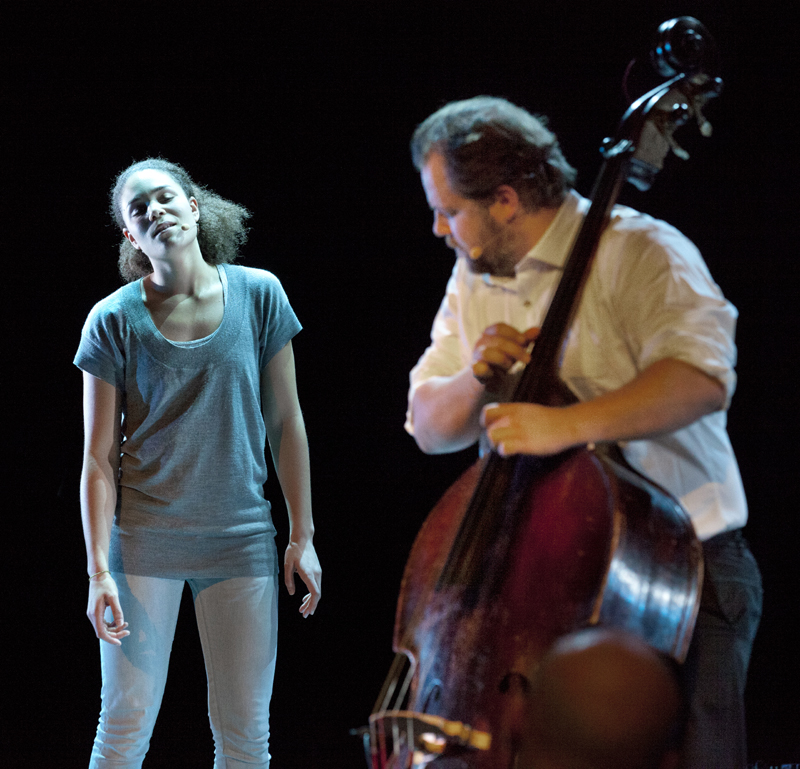

Prøverom: Flerspråklig forestilling med Torgrim Mellum Stene
- Dato:
- 17.11.2013 til 18.11.2013
- Start kl :
- 10:00
- Slutt kl :
- 16:00
- Adresse:
- Norsk Skuespillersenter, Welhavensgate 1, Oslo
 Torgrim Mellum Stene (sceneforteller) og Marie Ulsberg (produsent) gjennomførte Prøverom 17. og 18. november 2013. De arbeidet med å utvikle den flerspråklige forestillingen Barn av Babel til Rumifestivalen 2013. Forestillingen bygger videre på et arbeide Stene og Ulsberg har gjort tidligere. Prosjektet er støttet av Språkåret. Chirine El Ansary, Sarah Ramin Osmundsen og Morten Minothi Kristiansen (musiker) deltok i produksjonen.
{kind=link}
De skriver i sin rapport:
"Premissene for forestillingen var som følger: Vi hadde fire utøvere med ulik bakgrunn, en musiker fra impro-scenen, en slampoet, en forteller og en scenekunstner med bakgrunn både fra fortelling, dans og Le Coq. Dagene på Prøverommet utgjorde de første dagene på gulvet av i alt syv prøvedager.
{kind=link}
I forkant av denne prosessen hadde vi utarbeidet en manusskisse og bedt de ulike utøverne ta med seg materiale som kunne passe inn tematisk til ulike bolker i nevnte skisse. I tillegg var det et viktig moment at flerspråklighet, språkfilosofi og flerspråklig fortelling skulle være sterke momenter i sluttproduktet. Den begrensede tida tatt i betraktning, var de to innledende dagene viktige for å etablere en arbeidsmetodikk og legge grunnlaget for resten av prøveperioden. Dette gikk svært godt, det lå en åpenhet til grunn blant alle utøverne og vi fant raskt en framgangsmåte hvor de ulike utøvernes styrker og innspill ble balansert i forhold til hverandre. Det å ha mulighet til å bruke Prøverommet disse to dagene var viktig for å virkelig igangsette prosessen og gav gode rammer for å dykke inn i utforskningen."
Forestillingen er produsert i samarbeid med Oslo International Rumi Festival.
Ta også en kikk på Torgrim Mellum Stenes hjemmeside.
Foto: Tanja Steen (over) & Javed Montazeri (under)
{kind=link}